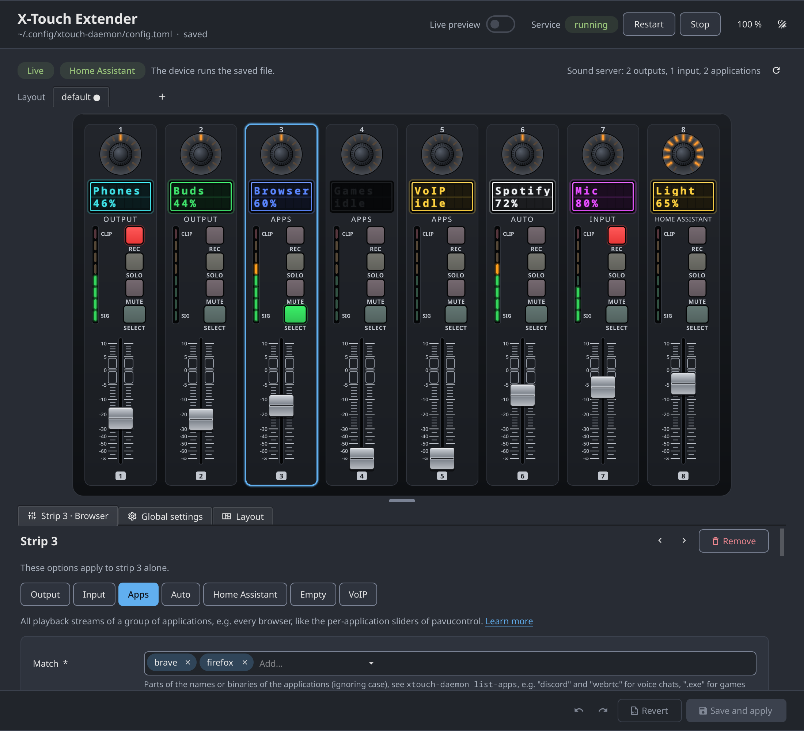

GUI¶
xtouch-daemon gui edits the configuration file in a window and applies it to the running daemon.

Install and start¶
On Arch Linux, install the package xtouch-daemon-gui-bin (see Getting started).
It uses the system's PyQt6, and starts with xtouch-daemon-gui or "X-Touch Extender" in the menu of the desktop:
From a checkout, the GUI needs the gui extra (PyQt6). The wheels bring Qt along, so it needs no system packages:
uv tool install --force './xtouch-daemon[gui]'
xtouch-daemon gui # the default configuration file
xtouch-daemon gui -c FILE # another one
Without the extra, xtouch-daemon gui says how to install it.
The window¶
- The strips on top show the device, laid out and labeled like it: the encoder with its ring of 13 LEDs (Mackie
Control lights the middle 11), the LCD (the backlight in the strip's color shines around a dark panel and through
its characters and the line between its two lines, as on the device), the meter next to Rec, Solo, Mute and
Select, and the fader with its dB scale: the middle of the cap marks the value, -∞ at the bottom, 0 dB at 77 % of
the travel (
behavior.unity_at). The type of each strip is printed under its LCD. - A handle under the strips (the short bar) makes them larger or smaller: drag it down for larger strips, up for more room below. The strips keep their proportions, and the GUI keeps the size for the next start.
- Above them, the layouts of the file, one tab each (see Layouts): the strips and the "Strip N" tab show the layout picked there. ● marks the one the device shows. + adds a layout, empty or a copy of the one shown, and "Show on the device" switches the running daemon to the layout (as saved, or as in the editor during the live preview).
- Below them, three tabs: "Strip N" holds the options of the selected strip. "Global settings" holds
[behavior],[aliases],[mqtt](as "Home Assistant"),[switching](as "Layouts"),[voip](as "Voice chat") and[device]. "Layout" holds the name, label and rules of the layout shown, with buttons to move it in the order and to remove it. A global setting never looks like an option of the selected strip. "Voice chat" also tells whether Mumble is connected, lists the steps of its setup, and installs the Mumble plugin with "Install Mumble plugin". - The footer shows the file, whether the device runs it, the problems, and the buttons Undo, Redo, Revert and "Save and apply".
- The header has the switch of the live preview, shows the state of the service with buttons to install, start, restart or stop it, which unit it runs (see The service), what the sound server has, the zoom, and a switch between the dark and the light theme.
The service¶
Next to the state of the service, the header shows which unit systemd uses: "packaged" for the one of the Arch Linux
package (/usr/lib/systemd/user/xtouch-daemon.service), or "from" and the program of a unit in
~/.config/systemd/user, which install-service wrote, e.g. for a checkout.
- Install and start takes the unit of the package when the GUI is the one of the package: it enables and starts
it, and writes no file. Any other GUI writes a unit for its own
xtouch-daemonto~/.config/systemd/user. - Use the packaged unit shows while a unit in
~/.config/systemd/useroverrides the one of the package. It removes that file; an enabled service stays enabled, and a running one restarts with the program of the package. - Restart stands out (with a tooltip that names both versions) when the daemon runs another version than the one installed, e.g. after an upgrade of the package: the daemon keeps running the old version until it restarts. This needs a daemon that tells its version (0.1.0 and later), and only counts for the service of the installation the GUI runs from.
Zoom¶
Ctrl++ (or Ctrl+=) makes the whole window larger, Ctrl+- smaller, Ctrl+0 goes back to 100 %; the zoom button in the header ("100 %") has the levels from 67 % to 300 %. The GUI keeps the zoom for the next start, like the theme.
Qt scales a window only when it opens, so a new zoom opens the window again at the new size: unsaved changes, undo,
the selected strip and the page stay. The zoom is on top of a QT_SCALE_FACTOR of the environment.
Live view and preview¶
While the daemon runs, the strips show what the device shows right now ("Live"), read from the daemon's live view. Without a running daemon they show what the configuration file would show ("File preview"), and the window says so. A daemon that runs while the device is not connected shows "Live · X-Touch-Ext not connected": the strips show what the device will show once it is there.
While the daemon runs with an [mqtt] section, a second pill tells how its connection to Home Assistant is doing:
"Home Assistant" while it is connected, otherwise what is wrong, e.g. "Home Assistant · not authorized" or
"Home Assistant · refused". Its tooltip has the broker's own words and what to check; a click opens the settings.
The strips are live only while the device shows the layout picked above; the others show what the file would
show. An inherit strip shows the strip of the default layout at its place.
A strip with unsaved changes shows how it will look once saved, marked with a dot; the others stay live. Strips after
the configured ones are drawn fainter: they are not configured, so they are auto strips.
Live preview¶
The switch "Live preview" in the header makes the device run the configuration in the editor before it is saved: the device follows every change a moment after it (undo and redo too), and the strips show it live. The file is not written. The switch is off whenever the window opens.
- While it is on, the pill "Previewing unsaved changes" says that the device runs what is in the editor, not the file. Strips with unsaved changes keep their dot, and are live too.
- Save and apply makes it the configuration: the daemon loads the saved file, which is what the device shows already. The switch stays on for the next change.
- Back to the file: turning the switch off, closing the window (it asks about unsaved changes as usual, and says that the device runs them) or "Revert" brings back the saved file. So does a window that crashed: the daemon goes back to the file when the connection of the window ends, or when the window does not answer for 10 seconds. The file also comes back when it changes on disk, or the daemon is reloaded; then the switch goes off and the window says why.
- What the daemon does not take shows in red under the pills, and the device keeps the version before. A preview
can't change
[mqtt](that takes a save and a restart), and a changed[device] nametakes effect only with a restart. A configuration with problems is not sent at all: the pill says "Live preview paused" until they are fixed. - Layouts are part of it: layouts added, renamed or changed in the editor run on the device as they are. The device stays on the layout it shows (the default one, if the preview does not have it); "Show on the device" switches to the layout being edited, also to one that is not saved yet. The strips of a layout are live only while the device shows it.
- One window at a time: a second window that turns the live preview on takes it over, and the first one's switch goes off.
- Home Assistant: strips the preview does not have keep their entities in Home Assistant (with their state; only nothing drives them), so they are as before once the file runs again. Entities of strips only the preview had are removed again when it ends.
The switch is off, and its tooltip says why, while no daemon runs, while the daemon reads another file, and for a daemon from before the live preview (restart it to run the installed version).
Selecting and moving strips¶
| Action | Mouse | Keyboard |
|---|---|---|
| Select a strip | Click it. | Left/Right arrows, Home, End. |
| Move a strip | Drag it. The others make room where it goes. | Ctrl+Left, Ctrl+Right. |
| Cancel a drag | Escape. | |
| Remove a strip | Context menu, or "Remove" on its tab. | Delete. |
| Configure a strip that is not configured | Double-click it, or its context menu. |
Only configured strips move, to any of the 8 places; the places in between become auto strips. Removing a strip
makes its place an auto strip, so the other strips stay where they are. The tab of a strip also has buttons to move
it left and right.
The strips on top are the first 8 of the layout. While it has 8 strips or more, or one of them collapses (see
Collapsing strips), a row of buttons above them lists every strip with where it is: on a
strip of the device ("on 3"), collapsed, or waiting for a place. A click selects it, also a strip beyond the 8.
"Add strip" adds an auto strip at the end; it is off, and its tooltip says why, while a new strip could never show (8
strips without collapse before it). While the daemon runs the layout, a strip that collapsed is drawn fainter with
its look from the file, and the others show what their strips of the device show. The buttons of
voip strips say who is on them ("4 voip: Bob · on 4").
The preview prints the type of each strip under its LCD. A voip strip says which kind it is: "VOIP GROUP" for a
strip of the group, the first name of its person for a
strip for one person.
Editing options¶
The forms come from the options of the configuration, so every option has a field. The options of a strip are in
the order of the device, from top to bottom: what the strip controls, the encoder, the LCD, the meter, the buttons
(Rec, Solo, Mute, Select), the fader and its volume range, and the id last (first for a homeassistant strip,
where it is what the strip controls).
- switches for on/off options, numbers with their ranges, choices, color swatches, lists as chips, masked fields for secrets, and file pickers;
- the help of each option under its field, with its default and, where the documentation explains more, a "Learn more" link to that section; a button sets the option back to its default;
choicesas a table, with the devices, the sound cards and the profiles of the card of each line to pick from. While a strip haschoices,deviceandprofilesare hidden, and the other way around: a strip has one or the other;- for choices, what the chosen value does (e.g.
recordingfor the Rec LED), and each value says it as a tooltip in the list; the type of a strip says what that type controls; - the errors next to the options they belong to, with the same messages as
xtouch-daemon check-config. The problems button in the footer lists them all; a click opens the page of the problem. An unknown option can be removed from there.
[mqtt] can be added and removed on its page. Above its options, the page shows how the daemon's connection is
doing (or that the daemon runs without the section, which it reads only when it starts), and "Test connection"
connects once with the settings as they are in the editor, saved or not, and says what is wrong if that fails.
Changing the type of a strip¶
The buttons above the options of a strip change its type. Options the new type has too stay as they are, e.g. label
and color. The others are not lost: the editor keeps them in the strip's table in the file, as a comment the daemon
ignores, and switching back to the type restores them. That also works after saving and closing the GUI:
[[strip]]
type = "empty"
# kept from type = "output" (the GUI restores these when the strip is switched back):
# device = "bluez_output.*"
# profiles = [
# { label = "Phones", profile = "output:analog-stereo+input:analog-stereo" },
# { label = "Speaker", profile = "output:iec958-stereo+input:analog-stereo" },
# ]
The page of the strip names the options it keeps, and for which type. Restored options look as they did in the file, comments included. A comment edited by hand into something that is no TOML any more stays in the file as it is; the page says so. Ctrl+Z undoes a change of the type with what it kept and restored.
Suggestions from the sound server¶
The GUI reads the sound server and suggests what it has:
| Option | Suggestions |
|---|---|
device |
The outputs or inputs by node name, with their descriptions; the default is marked. |
profiles |
The profiles of the sound cards of those devices; the active one is marked. |
match, behavior.ignore, apps of a layout |
The presets (@browsers, ...) first, then the names and binaries of the applications that play. A preset's tooltip tells what it stands for; its chip is outlined. |
processes of a layout |
The presets for processes. |
[aliases] |
The names of the applications that play. |
person of a voip strip |
The people in the voice chat now, as the running daemon tells them. |
The refresh button in the header reads the sound server again, e.g. after you started an application. Without a
sound server, type the names by hand. The people of the voice chat come from the daemon's live view: without a
running daemon (or nobody in the channel), type the names by hand. A voip strip without person is one of the
group.
Undo¶
Every edit can be undone: Ctrl+Z undoes, Ctrl+Shift+Z redoes. That includes removing a strip and reverting the file, so neither asks first. Typing into one option is one step. Ctrl+Z undoes in the document also while a text field has the focus.
Closing the window with unsaved changes asks whether to save them.
Save and apply¶
"Save and apply" (Ctrl+S) writes the file and reloads the daemon:
- It saves only a file without problems: the daemon would not take one with problems.
- Unchanged values keep their place and their comments, and moved strips take theirs along. The file is written in place, so a symlinked configuration stays one.
- It reloads the running daemon when that reads the saved file: the service, or one started from a terminal or an IDE.
- A changed
[device] nameis reloaded, but takes a restart to take effect. A changed[mqtt]section is not reloaded at all. In both cases the window offers "Restart the service" for the service; restart a daemon that runs elsewhere where it runs. - It then tells whether the device runs the saved file: "The device runs the saved file", or "The device does not run
the saved file yet". If that stays, the daemon did not take the file, and its log says why
(
journalctl --user -u xtouch-daemon).
"Revert" drops the changes and reads the file again (Undo brings them back).
The service¶
The service button installs, starts and restarts the systemd user service, the same as
xtouch-daemon install-service. It asks before it installs or starts it. While the service runs, "Stop" next to it
stops it (systemctl --user stop): it stays enabled, so it starts again with the next session, or with "Start".
A daemon that runs outside systemd (e.g. from a terminal or an IDE) is found too: the header shows "running elsewhere", and saving reloads it. The GUI does not start, restart or stop that one: restart it where it runs.